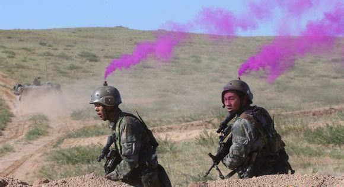
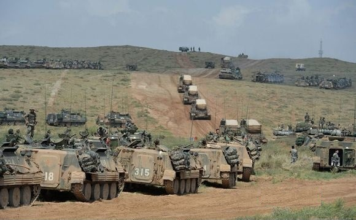
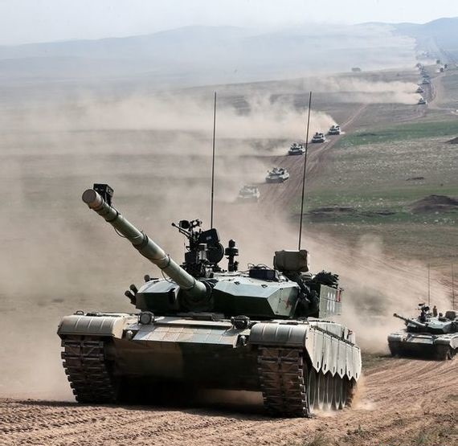
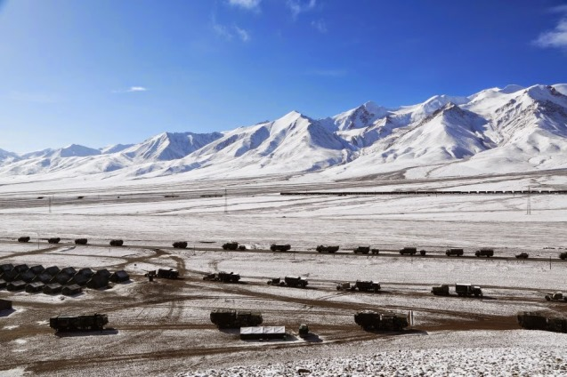
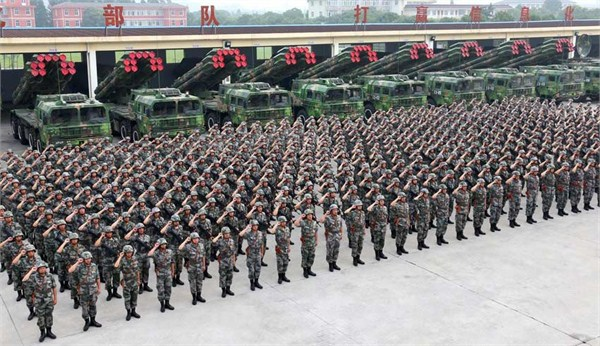

2014-07-24 20:04:00
習近平接掌中共中央軍事委員會主席已近兩年，在人事上，其對共軍改革之大刀闊斧的程度不下於王岐山在中紀委對文職幹部的整肅；首先積極提拔清廉能打仗的將領，並且無上限地追訴貪腐的前任將官，連上一任的軍委副主席徐才厚都在本月初被逮捕，另一個軍委副主席郭伯雄被捕也只是時間問題。
在武器研發的投資上，不單是對軍方的需要有求必應，就連軍方原本嫌貴的東西，都由軍委主動拍板採購，其中最令人矚目的就是我在前文提到的017號航空母艦：本來中共海軍計劃在整個2010年代有一艘遼寜艦（016號，001級）做為測試和訓練之用也就夠了，可以等到2020年再建002級，也就是現稱的018號，可是習近平堅持在2020年前必須有兩個完整可用的航母戰鬥羣，所以017號（001A級）在去年八月緊急上馬，再加上配套的J15戰機/055級大型指揮驅逐艦（其實應該是巡洋艦了，可是共軍還是講究孫子兵法的“形人而我無形”，所以會繼續搞這些“良賈深藏若虛”的把戲）/052D級防空驅逐艦/057級全電反潛護衛艦/093G級核子動力攻撃潛艇/全新的超大型補給艦，未來六年為了這個額外的航母戰鬥羣總投資將達到一萬億新台幣以上，耗費之大，令人咋舌。不過既然上級如此慷慨，中共海軍當然也就欣然笑納。在空軍方面，銭像洪水一般湧向共軍的最後幾個短板，尤其是噴射引擎，這一波的總投資約五千億新台幣；李克強在上個月甚至宣布將把2016年開始的十三五和2021年開始的十四五計劃串聯起來，主要就是針對噴射引擎這種研發週期長達15至20年的工業。連在地上爬的陸軍，也闊氣了起來：就在去年年中，大陸的幾家加工鈦合金的公司忽然收到了通知，要求提供報價以供共軍考慮試產中國版的M777式超輕型榴彈砲；這麼奢侈的裝備（鈦基的榴彈砲比鋼製的貴3到5倍！），只在兩年前都是共軍作夢不敢想的。
有了好的裝備，下一步當然是加強訓練。第一個推行現代化高強度訓練的中共將領是習近平在軍委會的新任副手許其亮；2011年底，他在空軍司令員任內創辦了“金頭盔”競賽，完全仿效美國空軍的實兵演習，讓飛行員進行自由對抗，這對將中共空軍的戰技訓練提升到二十一世紀的水平起了很大的作用。海軍自去年起，也進行了多系列的實兵演習，包括去年在西太平洋的實彈射撃訓練；據稱其飛彈消耗之多之貴，前所未有；今年的實彈射撃訓練剛好是現在從七月25日進行到八月1日，因為參加的艦艇太多，必須分在四個海域（渤海海峽、黃海北部、東海、北部灣亦即南海的東京灣）同時舉行。
不過我今天想提的重點是中共陸軍在最近進行的兩個系列的實兵對抗演習：首先是在內蒙古朱日和（在北京西北400公里的戈壁沙漠中）舉行的“跨越2014”演習，兩個月內已進行了六場。去年的“使命行動2013”和今年的這個“跨越2014”的差別在於前者是照劇本練的，如同國軍的“漢光演習”，所以主要練的是行軍和作業；而後者則是兩個加強旅之間的自由對抗，考験的是戰術和戰技。它和國軍的師對抗或旅對抗又不同：廣泛使用了雷射模擬器和自動發煙頭盔，此外有一方（“藍軍”）是新組建的專業假想敵部隊，紅軍則為各軍區派出標準建制的機械化步兵旅輪流出戰。這很明顯地是仿效美軍的專業OPFOR（OPposing FORce，即“假想敵部隊”）：駐地在加州Fort Iwin的第11裝甲騎兵團（11th Armored Cavalry Regiment，名字叫團，其實是一個超級旅，其第一和第二營-squadron-為專業OPFOR)。如同美軍的OPFOR，這隻專業“藍軍”也是旅級的單位，番號是獨立195裝步旅；11裝騎團有一個营的編制和戰術完全仿效中共陸軍最精銳的第38集團軍，而195裝步旅則剛好反過來模仿美國陸軍最精銳的第四師。下基地對抗11裝騎團的美軍部隊固然幾乎都全軍覆沒，而在至今這六場“跨越2014”演習裡也只有第四場的一個來自瀋陽軍區第16集團軍的機步旅靠著極佳的運氣而険勝。紅軍會打得這麼辛苦當然是故意的：藍軍不但有絶對的制空權，優勢的無人偵察機和武裝直升機，超強的電子干擾能力，隨手捻來的核生化打撃手段，最重要的是藍軍的指揮系統已經完全信息化，數位連線到每一個連，旅長在螢幕上可以實時綜觀全局，也可以用鍵盤直接下令，這在可見的未來仍將代表著全球陸軍作戰的最高標準，而看來共軍將以此標準來反復訓練它的部隊。 
两名剛剛“陣亡”的紅軍士兵

紅軍在前線集结

紅軍的99式坦克縱隊，注意炮管前端上方的演習用雷射模擬器
朱日和已經很熱鬧了，但是同時在甘肅省山丹縣共軍還舉行了另一個系列的旅對抗，也就是“火力2014”，專門來檢驗軍區或集團軍直屬支援部隊的戰力。計劃共有十場，目前第一場剛結束，紅軍是今年五月才成軍的西藏軍區直屬651獨立防空旅，配有紅旗16中程防空導弹。紅旗16由海軍裝備的海紅旗16改進而來，其作用等同俄軍的Buk導弹（就是剛剛射下MH17的那玩意兒），但是性能新了一代。藍軍則由中共空軍的SU-30扮演。結果紅軍經過幾千公里鐵公路行軍後，打了不到一天就一敗塗地，帶着83個檢討事项回家。下一個上場的是南京軍區陸軍第1集團軍遠程火箭砲兵旅。說起遠程火箭砲，共軍的確獨步全球，擁有GPS制導，射程為150，200，300和400公里的全系列火箭砲。這些火箭砲打遍全台灣綽綽有餘，又比東風導弹價廉好幾倍，共軍何必捨此不用而用上射程至少600公里的東風？

651旅在西藏

第1集團軍遠程火箭砲兵旅，背景是PHL03十二管火箭炮